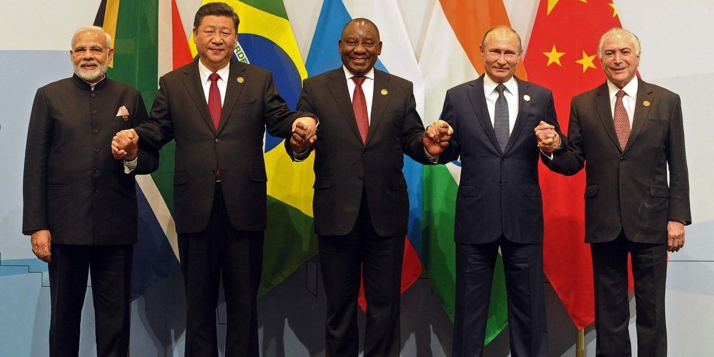

rating: 4.0 - UP Hybrid Learning
University of Pretoria introduces Hybrid Learning
19 February 2022
Tebogo Thage
Keywords: Students, Health, South Africa
how the pandemic has and still is affecting students across the world
rating: 4.3 - cyril agrees
Ramaphosa Agrees
13 February 2022
Tebogo Thage
Keywords: Politics, South Africa
the president of South Africa Agrees

rating: 4.8 - BRICs
BRICS Relationship tightens as World War 3 rumors increase
8 March 2022
Tebogo Thage
Keywords: Politics, South Africa
the president of South Africa Agrees
rating: 2.7 - Student Vaccination
Some students are choosing to vaccinate
9 March 2022
Tebogo Thage
Keywords: Politics, South Africa, Health
Many students are getting vaccinated to fight covid
rating: 3.7 - Table Mt.
Table Mountain experiences new Levels of Tourism this year
6 March 2022
Tebogo Thage
Keywords: Politics, South Africa, Health
Many students are getting vaccinated to fight covid
H